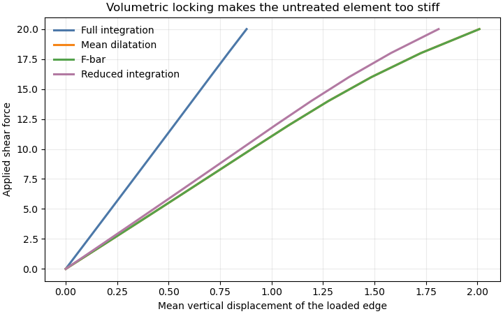
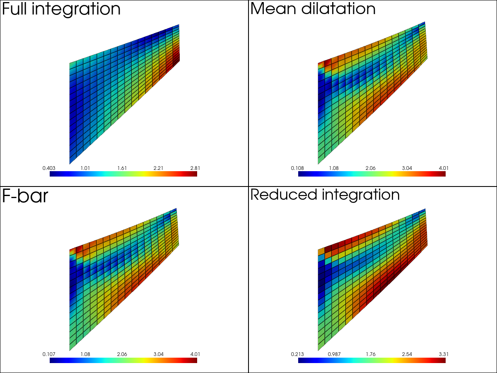
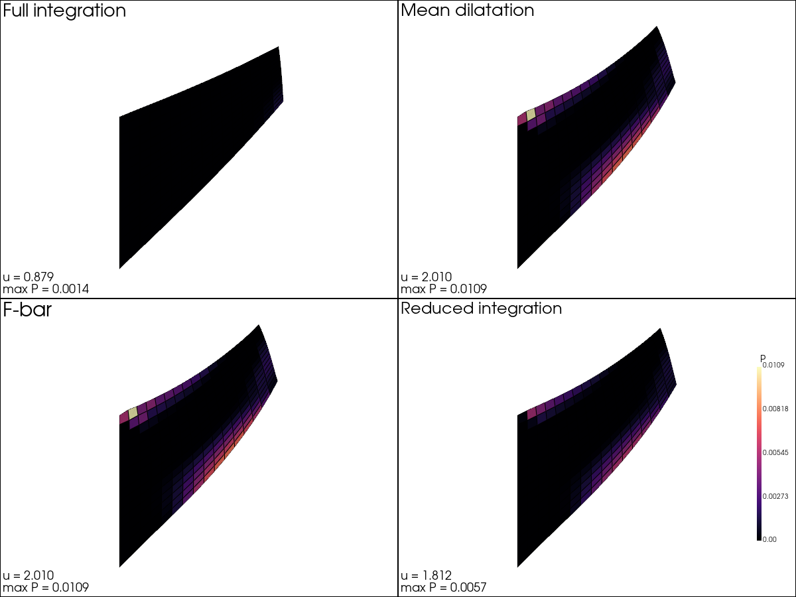

Note
Go to the end to download the full example code.
Nearly incompressible plasticity: four element formulations
Nearly incompressible materials are difficult for low-order displacement
elements. A fully integrated quad4 element constrains the volume change at
four Gauss points although its displacement field cannot satisfy all these
constraints independently. The resulting volumetric locking makes a
coarse mesh much too stiff.
This example compares four formulations available in Fedoo:
the standard fully integrated displacement formulation;
mean_dilatation, a B-bar projection of the volumetric strain;fbar, the finite-strain counterpart based on an element-average volume change;fedoo.weakform.StressEquilibriumRI, one-point integration with hourglass stabilization.
The benchmark is Cook’s membrane: a tapered panel clamped on the left and
loaded in shear on the right. Its nonuniform bending and shear field makes
locking visible even on a small mesh. Plane strain and :math:`
u=0.499` make
the response nearly incompressible, while a J2 law adds plastic flow. The
Python fedoo.constitutivelaw.ElastoPlasticity law is used here for
clarity; production models can use the equivalent optimized Simcoon law.
The three locking treatments should give similar load-displacement curves. The untreated formulation is expected to be noticeably stiffer. Reduced integration is inexpensive, but its answer also contains the artificial hourglass stabilization energy. Mean dilatation retains a symmetric tangent, whereas the consistent F-bar tangent is generally nonsymmetric.
from time import perf_counter
from pathlib import Path
from tempfile import TemporaryDirectory
import matplotlib.pyplot as plt
import numpy as np
import pyvista as pv
import fedoo as fd
# -----------------------------------------------------------------------------
# Geometry and material parameters
# -----------------------------------------------------------------------------
fd.ModelingSpace("2Dplane")
YOUNG_MODULUS = 200.0
POISSON_RATIO = 0.499
YIELD_STRESS = 2.0
HARDENING_MODULUS = 8.0
HARDENING_EXPONENT = 0.35
TOTAL_SHEAR_FORCE = 20.0
DEFORMATION_SCALE = 5.0
NX = 17
NY = 17
FORMULATIONS = {
"Full integration": None,
"Mean dilatation": "mean_dilatation",
"F-bar": "fbar",
"Reduced integration": "reduced_integration",
}
COLORS = {
"Full integration": "#4C78A8",
"Mean dilatation": "#F58518",
"F-bar": "#54A24B",
"Reduced integration": "#B279A2",
}
# Result histories are useful for post-processing but need not leave files in
# the example directory. The temporary directory remains alive until all
# plots have been generated at the end of the script.
OUTPUT_DIRECTORY = TemporaryDirectory(prefix="fedoo_incompressibility_")
def cook_mesh(name):
"""Create a structured Cook membrane mesh by mapping a unit square."""
mesh = fd.mesh.rectangle_mesh(
nx=NX,
ny=NY,
x_min=0.0,
x_max=1.0,
y_min=0.0,
y_max=1.0,
elm_type="quad4",
name=name,
)
xi = mesh.nodes[:, 0].copy()
eta = mesh.nodes[:, 1].copy()
mesh.nodes[:, 0] = 48.0 * xi
mesh.nodes[:, 1] = 44.0 * xi + (44.0 - 28.0 * xi) * eta
return mesh
def solve_formulation(label, method):
"""Solve one formulation and return history and final plotting data."""
key = label.lower().replace(" ", "_").replace("-", "")
mesh = cook_mesh(f"cook_{key}")
material = fd.constitutivelaw.ElastoPlasticity(
YOUNG_MODULUS,
POISSON_RATIO,
YIELD_STRESS,
)
material.set_hardening_function(
"power",
h=HARDENING_MODULUS,
beta=HARDENING_EXPONENT,
)
if method == "reduced_integration":
weakform = fd.weakform.StressEquilibriumRI(material, nlgeom="UL")
else:
weakform = fd.weakform.StressEquilibrium(
material,
nlgeom="UL",
incompressibility=method,
)
assembly = fd.Assembly.create(weakform, mesh, name=f"assembly_{key}")
problem = fd.problem.NonLinear(assembly)
problem.set_nr_criterion(
"Displacement",
err0=1.0,
tol=2e-4,
max_subiter=25,
)
left = mesh.find_nodes("X", 0.0)
right = mesh.find_nodes("X", 48.0)
problem.bc.add("Dirichlet", left, "Disp", 0.0)
# Trapezoidal weights represent a uniform traction while keeping the total
# applied force independent of the number of nodes on the loaded edge.
weights = np.ones(len(right))
weights[[0, -1]] = 0.5
weights /= weights.sum()
problem.bc.add("Neumann", right, "DispY", TOTAL_SHEAR_FORCE * weights)
# Register one compact history per formulation. ``P`` is stored at its
# natural Gauss-point location and converted only when it is requested for
# the final field plot.
results = problem.add_output(
Path(OUTPUT_DIRECTORY.name) / f"{key}.fdh5",
assembly,
["Disp", "P", "Stress"],
)
start = perf_counter()
problem.nlsolve(
dt=0.1,
tmax=1.0,
update_dt=True,
dt_max=0.1,
print_info=0,
interval_output=0.1,
)
elapsed = perf_counter() - start
# Loading several fields together makes ``get_history`` traverse the result
# frames only once. Averaging DispY over the right edge gives the response
# quantity used in the comparison curve.
history = results.get_history(
["Time", "Disp"],
indices=[None, right],
component=[None, "Y"],
data_type=[None, "Node"],
)
time = np.r_[0.0, np.ravel(history["Time"])]
mean_displacement = np.r_[0.0, np.mean(history["Disp"], axis=-1)]
results.load(-1)
plastic_strain = results.get_data("P", data_type="Element")
return {
"force": time * TOTAL_SHEAR_FORCE,
"displacement": mean_displacement,
"maximum_plastic_strain": np.max(plastic_strain),
"results": results,
"elapsed": elapsed,
}
Solving the four formulations
Every model uses the same geometry, mesh, material, load increments and
Newton tolerance. Only the treatment of the volumetric response changes.
Each solution is written to a temporary Fedoo MultiFrameDataSet; this is
the same object returned by fedoo.Problem.add_output() in a normal
analysis.
solutions = {
label: solve_formulation(label, method) for label, method in FORMULATIONS.items()
}
print("\nFinal response of Cook's membrane")
print("-" * 67)
print(f"{'Formulation':<23} {'tip displacement':>18} {'max P':>12} {'time [s]':>10}")
for label, solution in solutions.items():
print(
f"{label:<23} "
f"{solution['displacement'][-1]:>18.5f} "
f"{solution['maximum_plastic_strain']:>12.5f} "
f"{solution['elapsed']:>10.3f}"
)
Final response of Cook's membrane
-------------------------------------------------------------------
Formulation tip displacement max P time [s]
Full integration 0.87896 0.00137 0.960
Mean dilatation 2.00988 0.01090 1.426
F-bar 2.01025 0.01090 1.361
Reduced integration 1.81188 0.00569 0.626
Load-displacement histories
get_history reads Time and Disp together from all saved frames.
The vertical displacement is averaged over the loaded edge. The standard
element reaches only about half the displacement of the projected methods:
this is the characteristic artificial stiffness caused by volumetric
locking. Mean dilatation and F-bar are almost indistinguishable here.
fig, ax = plt.subplots(figsize=(7.2, 4.5), layout="constrained")
for label, solution in solutions.items():
ax.plot(
solution["displacement"],
solution["force"],
color=COLORS[label],
linewidth=2.2,
label=label,
)
ax.set(
xlabel="Mean vertical displacement of the loaded edge",
ylabel="Applied shear force",
title="Volumetric locking makes the untreated element too stiff",
)
ax.grid(alpha=0.25)
ax.legend(frameon=False)

<matplotlib.legend.Legend object at 0x7f5e6908b520>
Von Mises stress with Fedoo’s default plotting behavior
The last frame of each MultiFrameDataSet is plotted directly with
fedoo.DataSet.plot(). Apart from arranging the four formulations in a
linked layout, this first field comparison deliberately keeps the default
plotting behavior. In particular, Fedoo chooses the data conversion,
deformation scale, color map and range for the von Mises stress.
plotter = pv.Plotter(shape=(2, 2), window_size=(1200, 900))
for subplot, (label, solution) in enumerate(solutions.items()):
plotter.subplot(*divmod(subplot, 2))
solution["results"].plot(
"Stress",
"vm",
lock_view=True,
multiplot=True,
plotter=plotter,
title=label,
)
plotter.hide_axes()
plotter.link_views()
plotter.view_xy()
plotter.show()

Accumulated plastic strain with controlled comparison options
A second Fedoo plot shows P, converted from Gauss points to elements on
demand. Here common color limits and a common magnified deformation scale
are intentional: they make the amount and location of plastic flow directly
comparable. Locking suppresses plastic flow in the fully integrated model;
the projected formulations recover the expected bands near the upper-left
and lower-right corners.
maximum_plastic_strain = max(
solution["maximum_plastic_strain"] for solution in solutions.values()
)
plotter = pv.Plotter(shape=(2, 2), window_size=(1200, 900))
for subplot, (label, solution) in enumerate(solutions.items()):
plotter.subplot(*divmod(subplot, 2))
solution["results"].plot(
"P",
data_type="Element",
scale=DEFORMATION_SCALE,
cmap="magma",
clim=[0.0, maximum_plastic_strain],
show_edges=True,
show_scalar_bar=subplot == 3,
lock_view=True,
multiplot=True,
plotter=plotter,
title=label,
title_size=13,
scalar_bar_args={
"title": "P",
"vertical": True,
"position_x": 0.90,
"position_y": 0.18,
"height": 0.62,
"width": 0.035,
"title_font_size": 14,
"label_font_size": 10,
},
)
plotter.hide_axes()
plotter.add_text(
f"u = {solution['displacement'][-1]:.3f}\n"
f"max P = {solution['maximum_plastic_strain']:.4f}",
position="lower_left",
font_size=8,
color="black",
)
plotter.link_views()
plotter.view_xy()
plotter.show()
plt.show()
# All result data have now been loaded and rendered.
OUTPUT_DIRECTORY.cleanup()

Interpretation
The close agreement of mean dilatation and F-bar is expected for this smooth,
monotonic loading path. F-bar becomes especially useful for larger and more
heterogeneous finite strains. Reduced integration is often the fastest
choice for quad4/hex8 meshes, but its hourglass coefficient should be
checked when the deformation contains strong bending or localization.
Total running time of the script: (0 minutes 5.504 seconds)